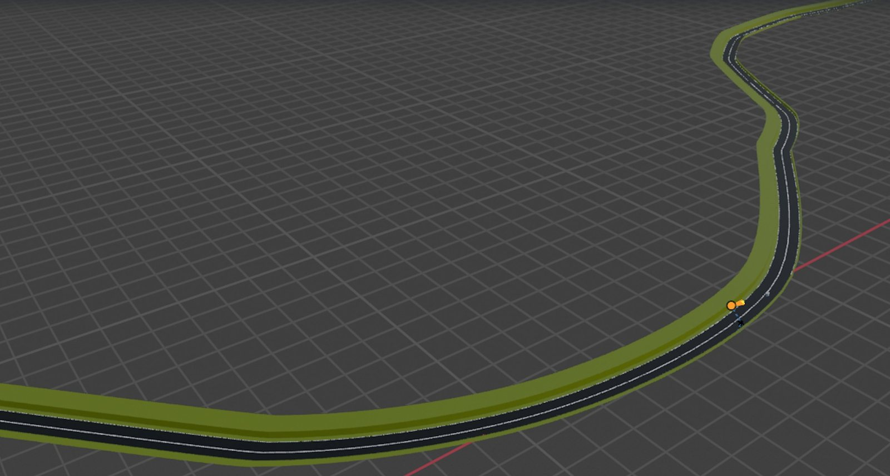
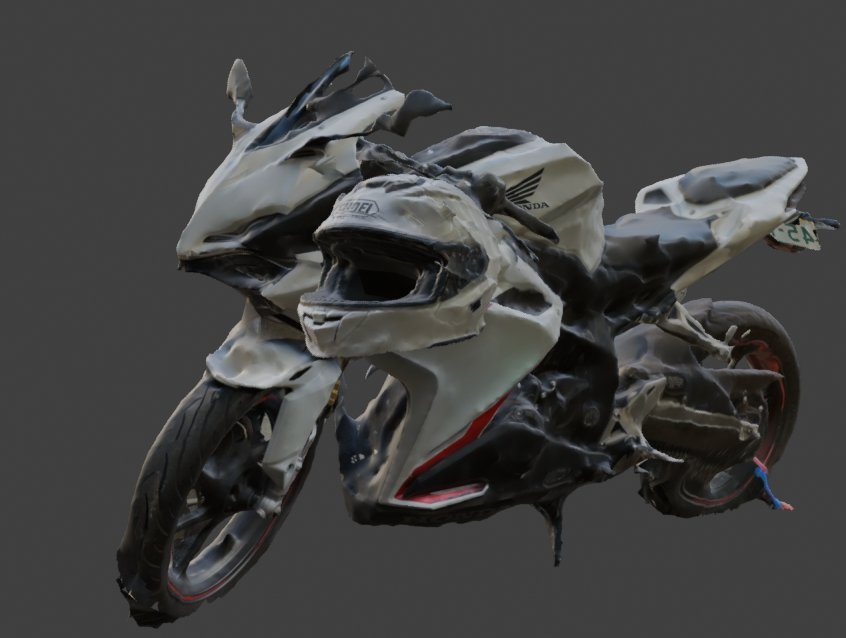
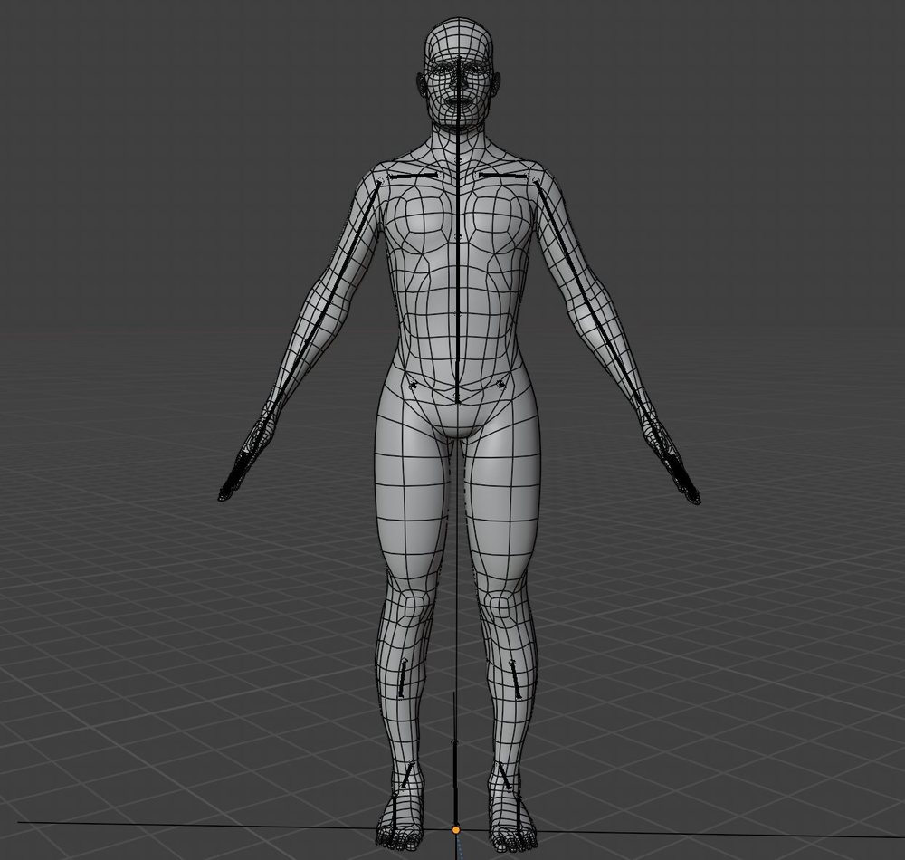
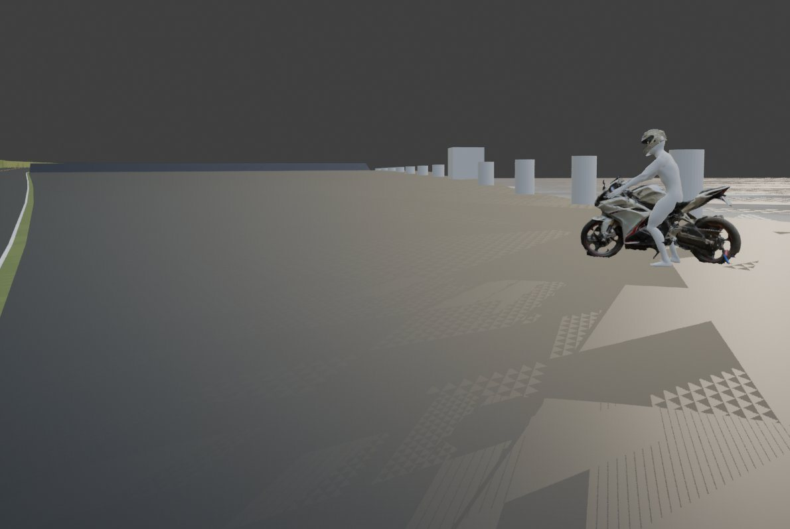
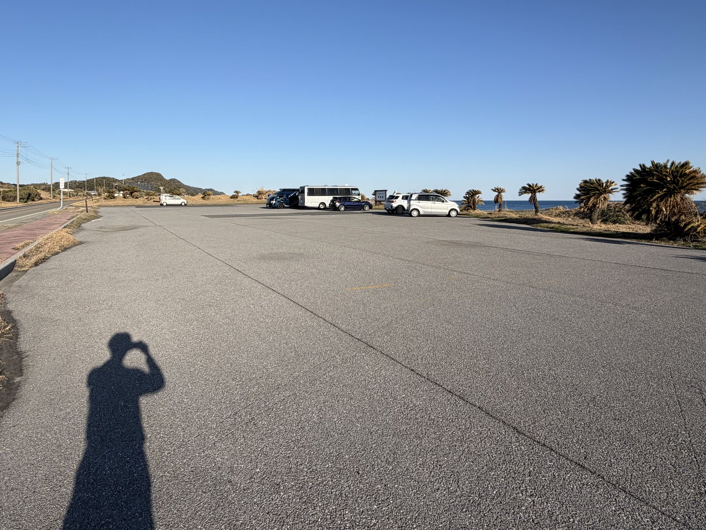
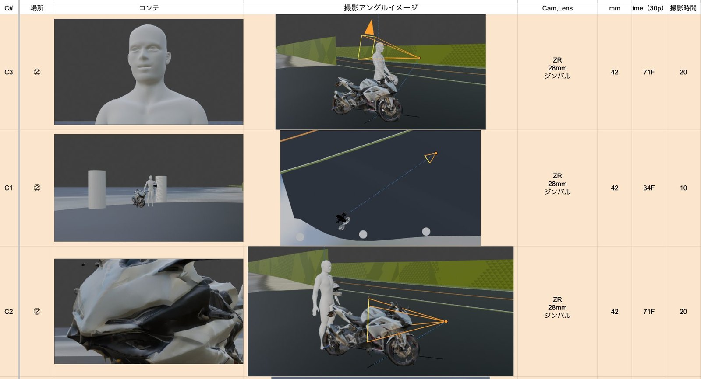
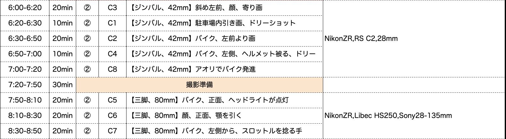
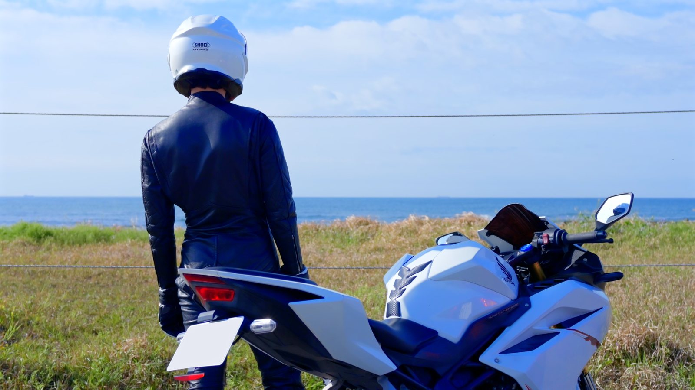
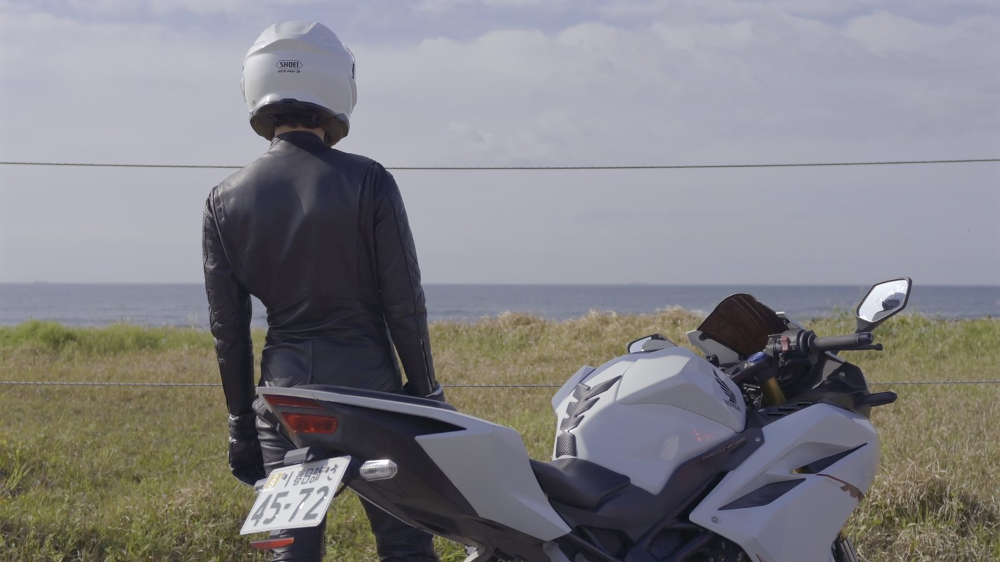
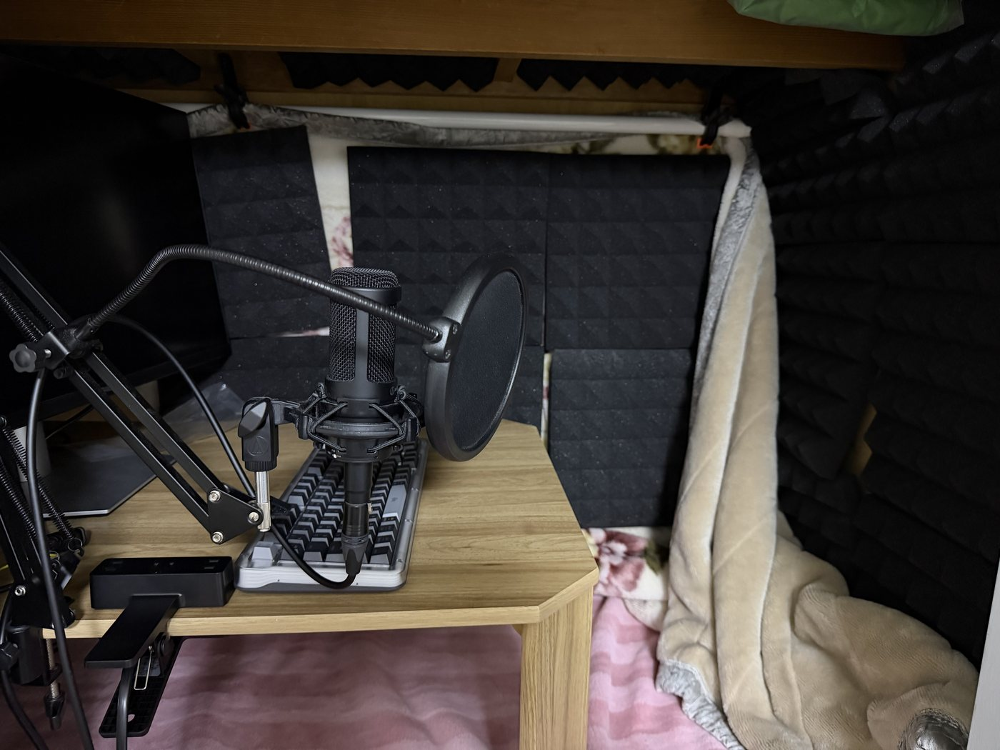

小竹竜ノ介22歳記念PV 「大人序章中」
毎年、自分の誕生日に予告編映像をつくってきました。今年は「予告」ではなく60秒のPVに。就活を目前にした決意表明のメッセージと、昨年手に入れた憧れのバイクを、とにかくカッコよく——いわば、自分とバイクのCMです。

ロケハン × Google Map × Blenderで、
画を設計してから撮る
ロケハンで撮影した映像とGoogle Mapを手がかりに、ロケ地を1分の1スケールでBlender上にCG化。そこでカメラ位置を詰めてVコンテ（プリビズ）を作りました。狙いは「画を先に固めてから撮る」こと。使うレンズの焦点距離をプリプロの段階で確定できたので、必要最小限のレンズだけをレンタルし、予算も抑えられました。
ロケ地は1分の1スケールで構築。道路は今回あらたにモデリングし、バイクとヘルメットはiPhone＋Scaniverseでスキャンした3Dデータ、ライダーは過去に自作した素体を使用しています。リグは上半身FK・下半身IKで構成されています。





準備で、現場に余白をつくる
Vコンテをもとに香盤表を作成し、あえて余裕を持ったスケジュールを組みました。おかげで本番は狙ったカットを確実に押さえたうえ、空いた時間で追加のカットを撮影。そこで生まれた良いカットは、実際に本編へ採用しています。自分を含む6名のクルーを段取りよく動かせたのも、この準備があってこそでした。


色編集はカッコ良く、わかりやすく
撮影はLogで収録。4台のカメラの絵を揃えるため、波形（ウェーブフォーム）とベクトルスコープを使ってカメラごとの差を最小限に整えてから、本来の色づくりに入りました。DaVinci Resolveで編集とあわせて約1週間。未来に向けた前向きな決意表明のメッセージを伝えるため、水色っぽい色味に整えました。また、被写体だけを自然に明るくしてカットの主役への視線誘導をしたり、光の方向を強調することを意識しました。下のバーを左右に動かすと、前後を同じフレームで比較できます。


BEFORE AFTER決意表明を、自らの言葉で
この60秒の芯にあるのは、22歳のいまの決意表明。就活を目前に、自分の人生について考えることが増え、その思いも重ねたメッセージです。ナレーションはLogic Proと自宅の録音環境で、自分の声で収録しました。これまではリビングで録っていましたが、今回はより良い音を求めて、押し入れに毛布と吸音材を敷き詰めた録音ブースを自作。さらに車のCMを数多く見て、落ち着いた語り口に挑戦しました。台本は、かっこいい言葉選びをしながらも、わかりづらくならないようバランスを考えています。

- RUNTIME
- 60秒
- PERIOD
- 2026年3月末〜5月
- CAMERA
- Nikon ZR ／ Insta360 X5 ／ GoPro HERO12 ／ DJI Mini 4 Pro
- SOFTWARE
- Blender（プリビズ） ／ Final Cut Pro（編集） ／ Logic Pro（整音・ナレーション） ／ DaVinci Resolve（カラーグレーディング）
- SCHEDULE
- Vコンテ 3日 ／ 撮影 1日 ／ 編集・カラグレ 1週間 ／ ナレーション・整音・仕上げ 1日
- CREW
- 6名（ディレクション含む）